IDAS / AGENTIC EDA
IDAS 参会｜杨帆：
从设计意图到物理实现
模拟电路 Agentic EDA 的工程路径
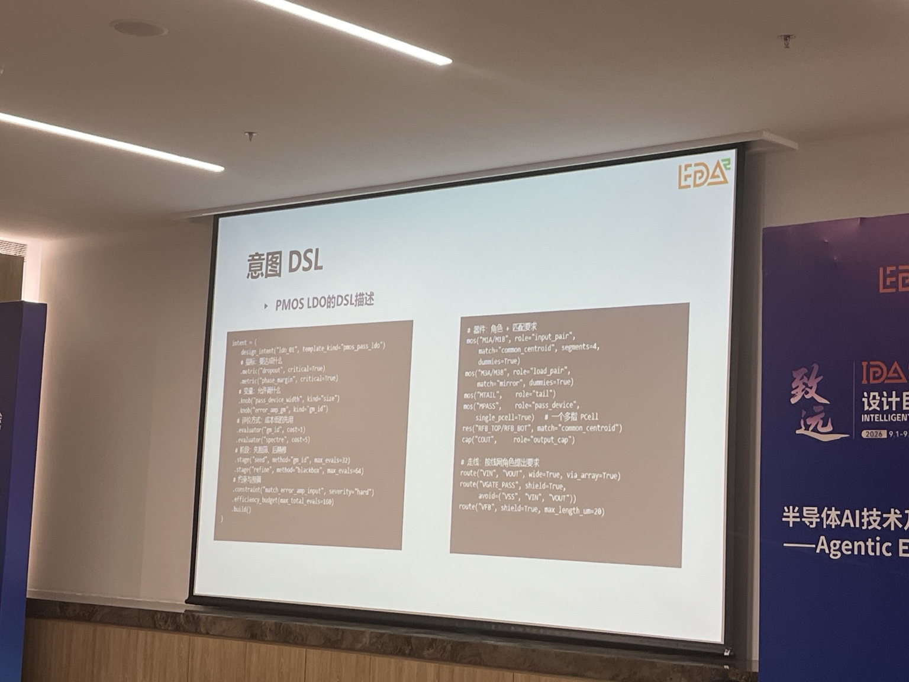
根据 2026 年 9 月 2 日 IDAS 现场分享、录音与拍摄整理。转写中的 gm/Id、SMT、A*、DRC/LVS、ECO、PDK 与 PEX 等术语已结合现场页面校正。本文记录报告展示的方法与案例，不将单次案例外推为通用能力。
杨帆教授的分享围绕一个具体问题展开：当智能体进入模拟电路设计后，怎样把自然语言需求转成可以被分析器、优化器和 EDA 工具稳定执行的任务。报告给出的主线是：先用 DSL 承载设计意图，以模板复用设计经验，再把尺寸与物理实现分别交给适合的确定性求解器。
一、先把“为什么这样设计”写出来
报告首先引入了意图 DSL。以 PMOS LDO 为例，DSL 不只写目标指标，还描述可调变量、评估器、优化策略、仿真预算和硬约束；在结构层，它继续标注输入对管、负载对管、尾管和功率管等器件角色，并把匹配、共质心、镜像、屏蔽、宽线和最大走线长度等要求写入同一份描述。
这层表示位于自然语言需求与具体 EDA 操作之间。智能体可以参与理解和编排，但后续工具拿到的是结构化目标、变量和约束，而不是一段需要反复猜测的自然语言。
二、模板承载一类电路的设计经验
报告区分了“模板”和“设计意图”：模板面向一类电路，保存结构、尺寸顺序以及指标与变量的对应关系；意图面向当前这一次设计，给出具体指标、变量和预算。选择模板后，再生成本次任务的意图 DSL。
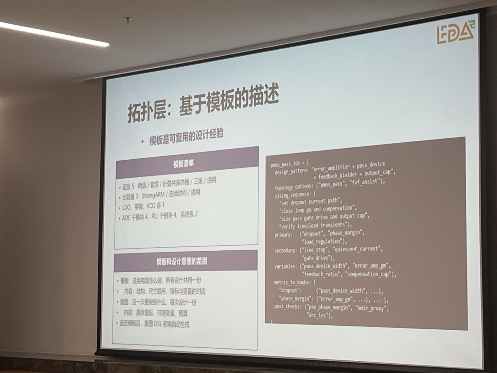
现场列出的模板库包括运放、比较器、LDO、带隙基准、VCO、ADC 子模块和 PLL 子模块等。右侧的 LDO 模板进一步写出了设计顺序：先确定压差与电流通路，再闭合环路跨导与补偿，之后处理功率管驱动和输出电容，最后验证线性与负载瞬态。
三、尺寸层：先判可行，再给初值，最后微调
尺寸优化没有直接从黑盒搜索开始。第一步是符号分析：根据小信号模型和近似方程快速判断指标组合是否可行，不可行的组合不进入后续仿真优化。现场示例给出了两级运放的 DC 增益 69.5 dB、GBW 27.5 MHz、相位裕度 66.2°，以及 LDO 环路相位裕度和 PSRR 的快速估计。
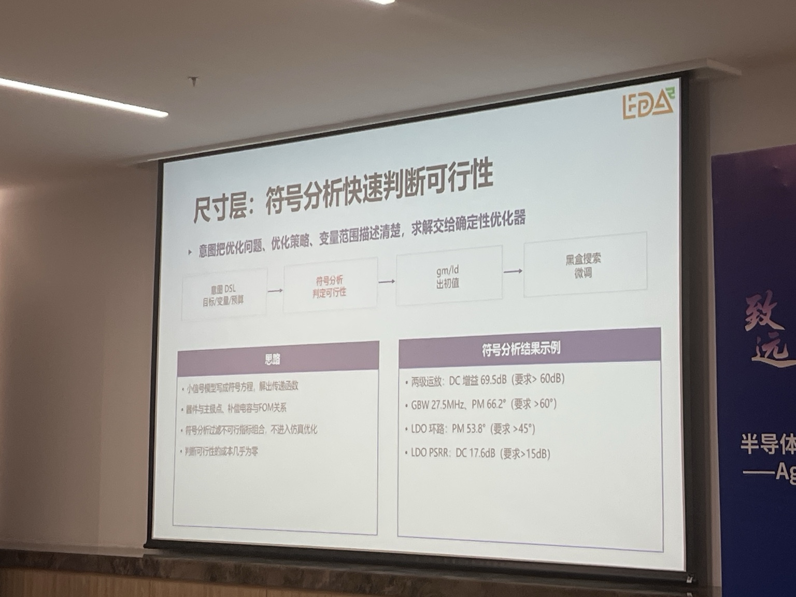
第二步用 gm/Id 方法给出一组合理工作点。现场以 50 MHz GBW 为目标，反推出所需跨导，再根据 gm/Id 选择电流和器件宽度，并通过扫描验证工作区。第三步才进入黑盒优化，对 SPICE 仿真结果做最后微调。
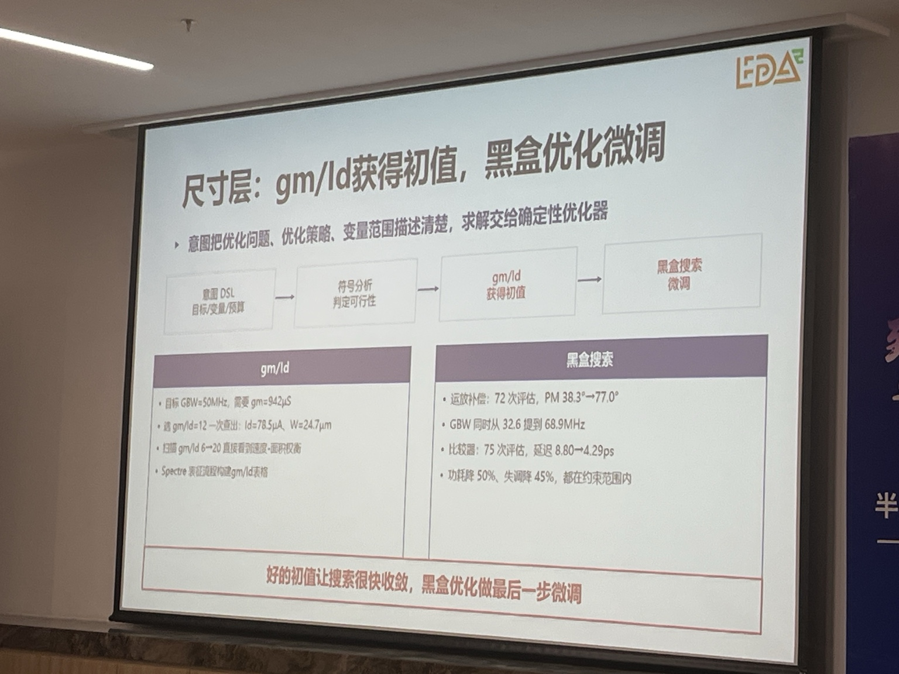
报告给出的数据是：运放补偿经过 72 次评估，相位裕度由 38.3°提高到 77.0°，GBW 由 32.6 MHz提高到 68.9 MHz；比较器经过 75 次评估，延迟由 8.80 ps降至 4.29 ps，同时功耗和失调下降。它说明的是这两个案例中的搜索过程与结果。
四、物理层：关键部分用 SMT，普通走线保留 A*
传统的解析布局加逐线网 A* 布线容易陷入局部决策：前面的器件位置和走线占用资源后，后续网络可能无法收敛。报告尝试把不重叠、网格、并间距、对称、匹配、共质心以及面积和线长目标统一编码到 SMT 问题中，整体求得可行解。
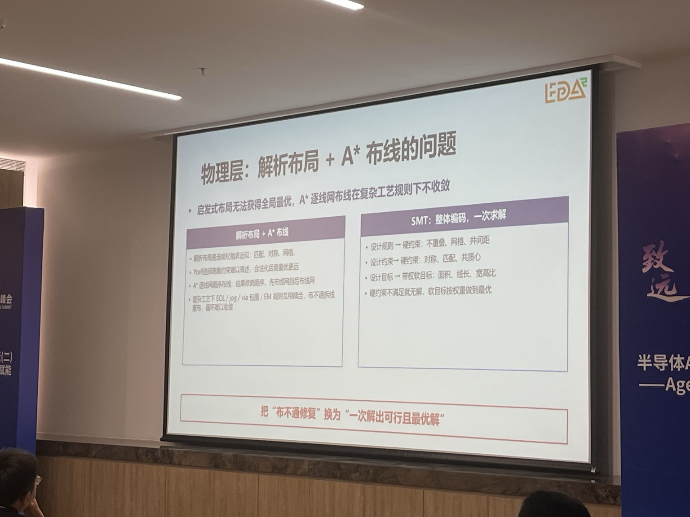
考虑到全部网络都用 SMT 会带来较高复杂度，报告采用了混合策略：差分、匹配、基准、反馈和时钟等关键网络由 SMT 直接求解；普通网络只估计容量并预留资源，仍使用 A* 或结构化布线。布线容量也作为变量与器件位置一起求解，使走线结果能够反过来约束布局。
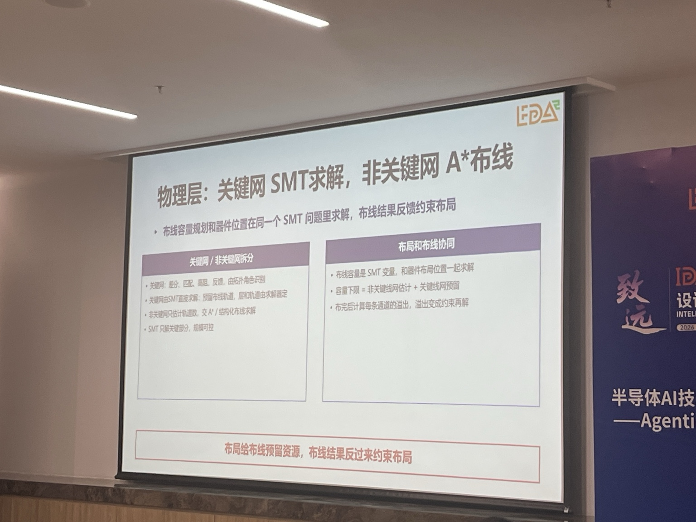
五、违规修复按影响范围分层
版图生成后的错误不采用统一的重新布局或重新布线，而是按照影响范围分流：
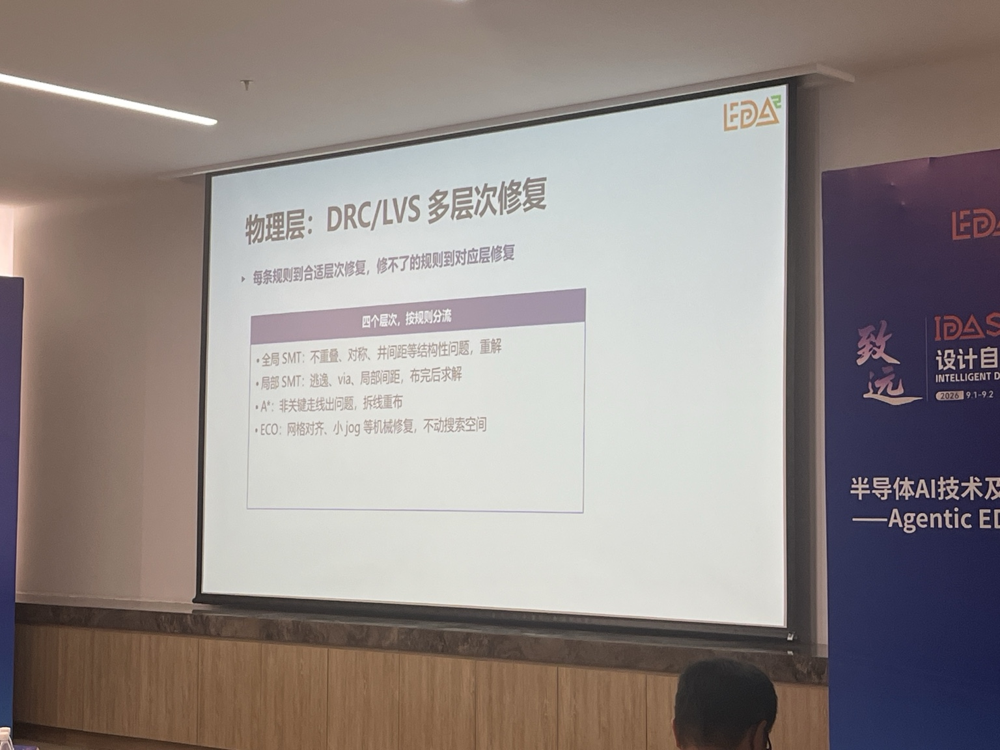
六、两个端到端实例
StrongARM 比较器
StrongARM 案例从包含 15 项指标、4 个变量的意图 DSL 出发，完成 9 个器件和 9 个网络的电路设计，经过 75 次黑盒评估，再进入 SMT 布局布线。现场页面显示：4 个器件组、3 条布线通道和 9 个网络全部布通，版图自动生成约 17.4 秒；经过两轮 SMT 与 28 处 ECO 修复，最终 sign-off DRC 为 0 违规。案例采用 TSMC N28 环境。
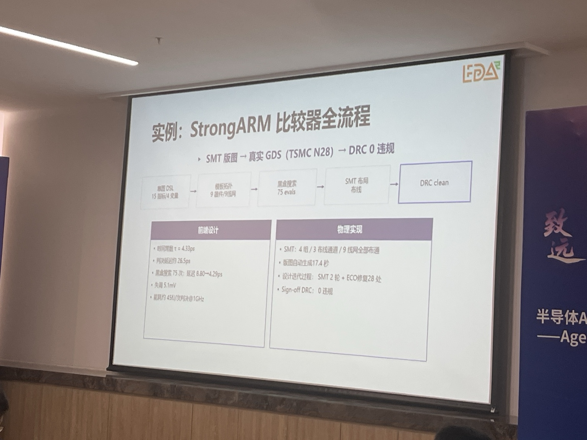
两级 Miller 运放
两级 Miller 运放案例包含 18 项指标、4 个变量，依次经过符号分析、gm/Id 初始化、72 次黑盒评估以及物理实现。现场给出的物理规模为 17 个器件、9 种 PCell、64 条走线，经过 5 轮 ECO 修复后达到 DRC clean。
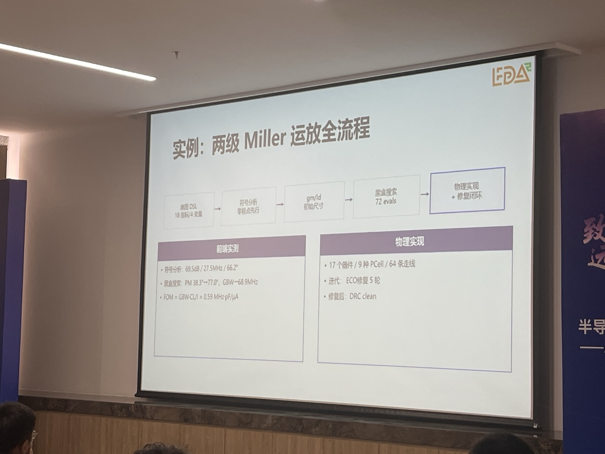
两页实例明确展示了前仿优化、真实 PDK 下的版图生成和 DRC 修复；现场页面没有给出 PEX 后仿数据。因此，这里能够确认的是“前仿结果 + 物理规则闭环”，不能据此认定版图后电气性能也已自动闭环。
七、工艺迁移：保留意图，重新表征工艺
报告把迁移信息分成两类。工艺相关部分包括 PDK 规则、PCell、模型和需要重新标定的 gm/Id 数据；工艺无关部分包括意图 DSL、模板中的拓扑与设计步骤，以及布局布线和验证流程。更换 PDK 后，用同一份描述重新运行尺寸和物理实现。
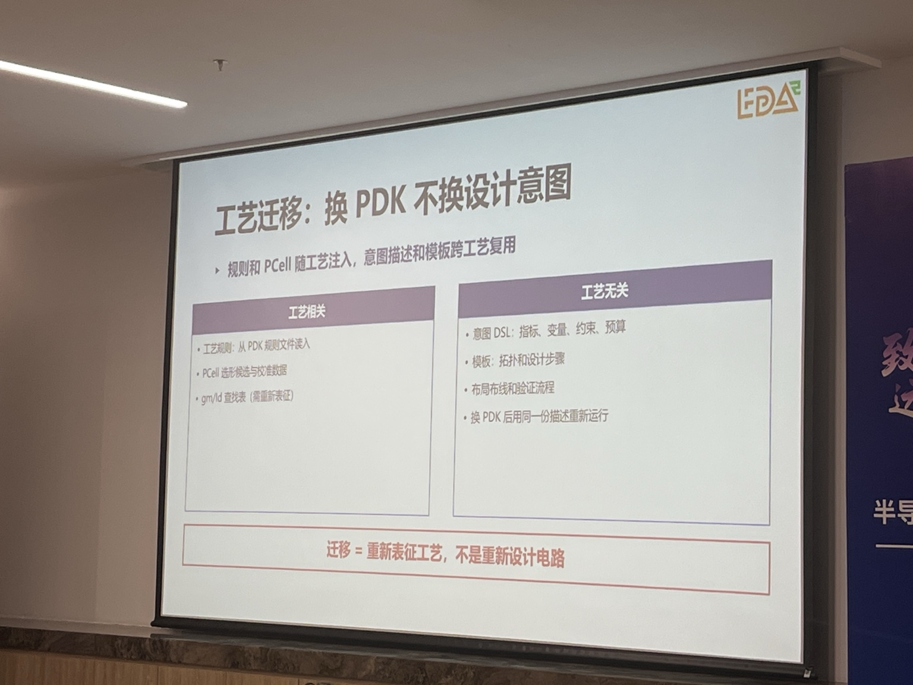
这套拆分保留了“要实现什么”，但并不自动证明原拓扑在新工艺下仍然合适。拓扑、设计顺序和指标—变量关系是否需要调整，仍需要通过跨 PDK 案例进一步验证。
八、关于“创新”的现场回答
报告将智能体探索新设计的可能路径分成随机探索与深度推理：前者在 DSL 限定的约束空间内进行拓扑和参数采样，后者利用符号分析解释性能瓶颈、灵敏度和不可行组合，为搜索提供方向。
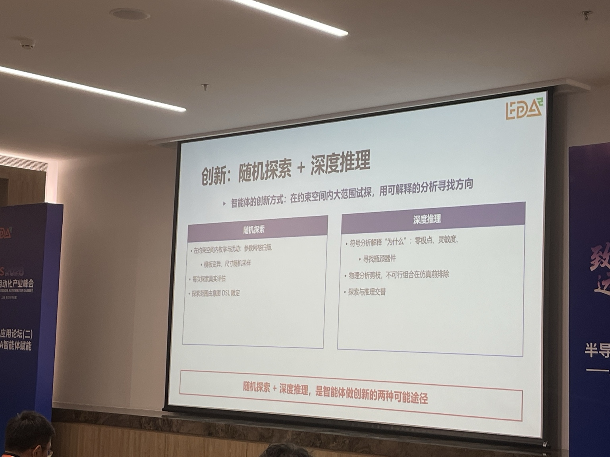
问答环节中，有专家追问系统是否已经发现人类没有见过的新拓扑。杨帆教授的回答是目前没有。他提到，探索结果可能只是已有结构的等价变化；即使得到陌生架构，如果缺少解释，工程师也很难在真实设计中采用。
九、现场结论与未展示部分
总结页把报告方法压缩为三项分工：人类贡献创意和架构，智能体补充知识并串联流程，EDA 与中间件弥补语义到实现之间的鸿沟。对应的实现链路是：DSL 承载设计意图，解析分析与 gm/Id 给出初值，黑盒优化微调，再由意图驱动物理实现。
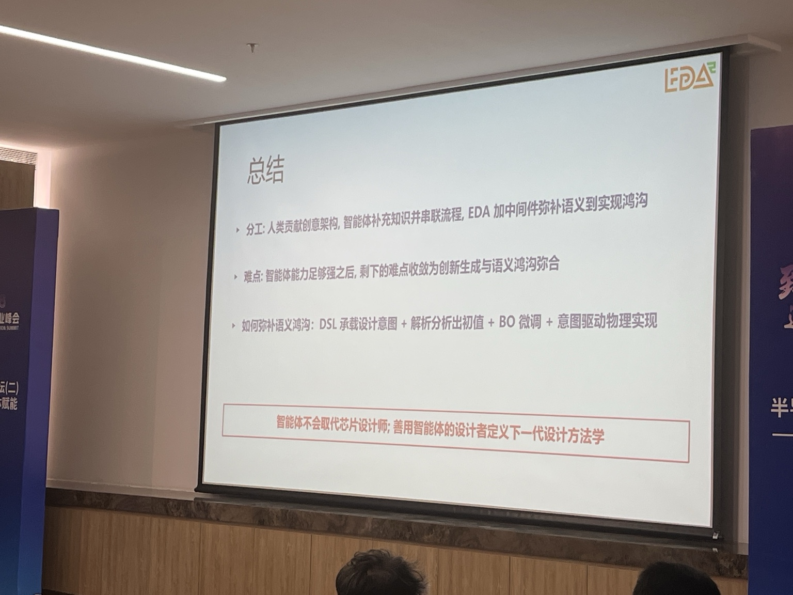
从本次展示可以确认的范围包括：设计意图结构化、模板选择、尺寸初始化与仿真优化、关键网与普通网络的混合求解，以及 DRC 分层修复。现场没有展示复杂模拟或混合信号系统的规模化结果，也没有给出两个实例的 PEX 后仿闭环数据；新拓扑探索仍处于研究问题阶段。